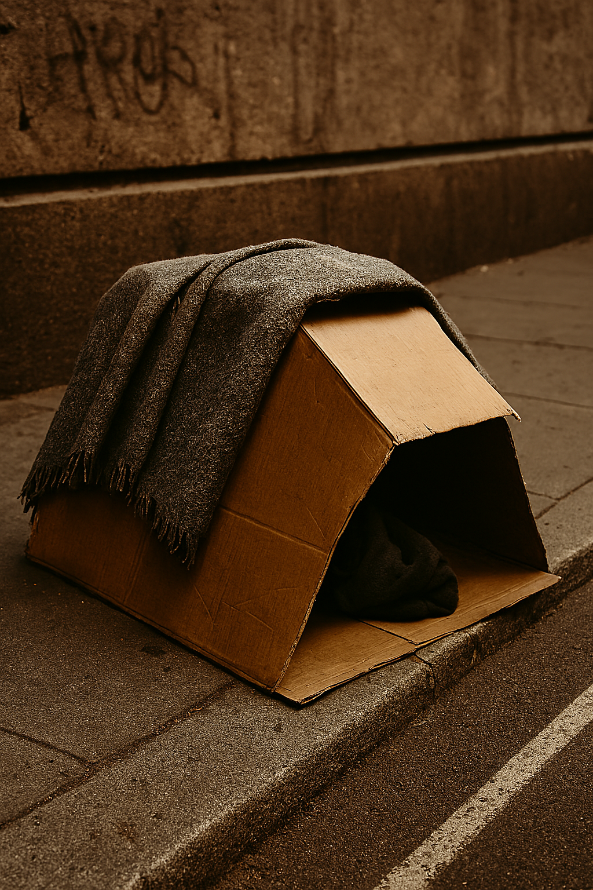

| Inicio | Estadísticas | Testimonios | Deja tu reflexión |
Este sitio busca provocar una reflexión íntima sobre la realidad de las personas en situación de indigencia, sus desafíos diarios y la necesidad de respuestas sociales compasivas.
Contempla estadísticas, testimonios y recursos para informarte y actuar. La intención es sensibilizar y motivar acciones concretas.
Aquí presentamos una historia ficticia que representa muchas vidas reales afectadas por la pobreza, la soledad y la falta de oportunidades.
|
Rostro |
Manos |
 Refugio |